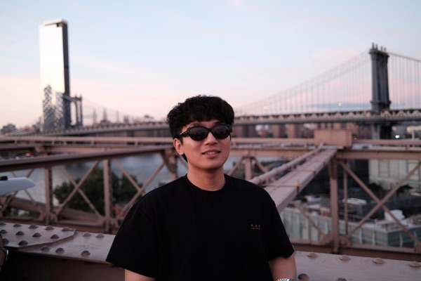
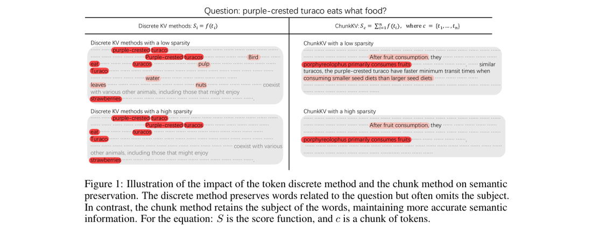
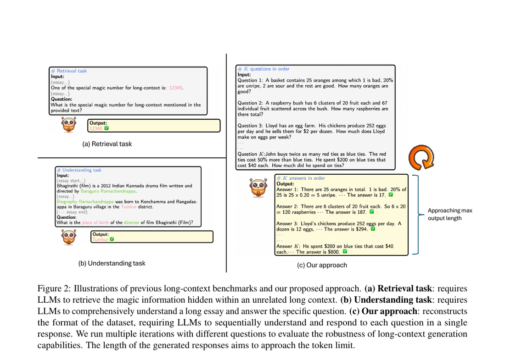
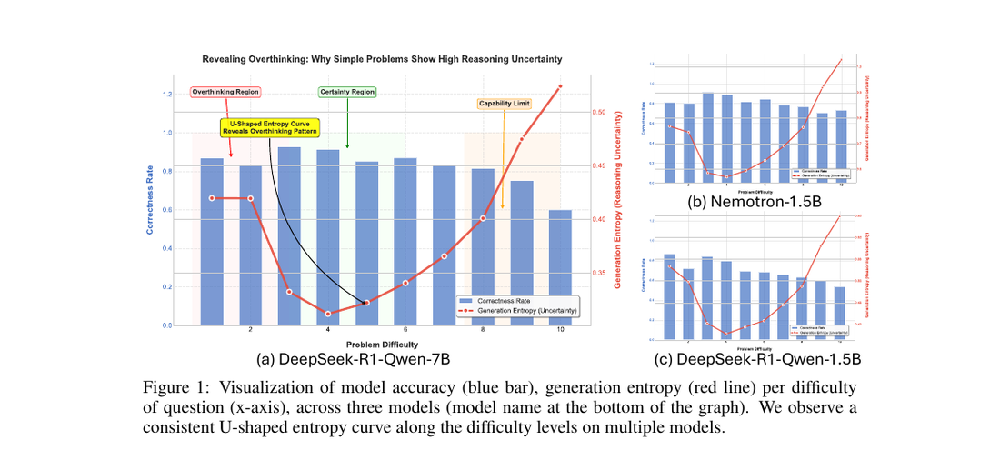

Building the inference-cost layer
for large language models.
Plus LMFlow, an open-source LLM fine-tuning toolkit (8.5k stars, 830 forks) built with Prof. Tong Zhang's group at HKUST. Long-running collaborations with Xiaowen Chu (HKUST-GZ, IEEE Fellow), Zhenheng Tang (HKUST), Peijie Dong (HKUST-GZ).
Advised by Prof. Xiaowen Chu (IEEE Fellow) and Prof. Xuming Hu. Focus: efficient LLM inference, KV-cache compression, long-context evaluation.
Post-training GLM-5.1 and Qwen3.6 35B for tool use, code, and the agent harness layer. Co-authored Macaron v1, δ-mem, and MinT.
With Prof. Eunsol Choi. Built DiffAdapt (ICLR 2026) — efficient reasoning that adapts compute per problem difficulty.
With Prof. Tong Zhang. Worked on LLM-efficiency training — LISA (202 cites) and core author of LMFlow, an open-source fine-tuning framework.
Research internship at Baidu Research, Cognitive Computing Lab (2021 – 2022) on NLP parsing. First exposure to research-grade systems work.
KV-cache compression and long-context generation — a major memory and throughput bottleneck in long-context serving.
Test-time compute, speculative scaling, and the memory layer that long-horizon agents will need next.
Pruning, sparse fine-tuning, and zero-cost search for finding the right model under a cost budget.
The three lines all answer the same question from different angles: what can we compress or adapt while preserving user-visible quality?
Token-level eviction throws away the very thing that makes long context useful — semantic locality. ChunkKV groups related tokens into chunks and keeps only the most informative ones.


Together: a benchmark → method → critique → benchmark loop that drives the field forward — not a one-shot paper. ★ first or co-first author

Together, these works connect adaptive reasoning, serving behavior, prompting, and persistent memory across the agent stack.
~420 citations across this line — efficiency methods and specialised LLMs other people build on.
Inference is the economics layer of LLM products. Whatever the team is building — KV-cache infra, a compressed model, an agent runtime — the question I keep answering is the same: what can we compress or adapt while preserving user-visible quality?
LongGenBench, KV-compression eval, agent-compression eval, RLM serving study.
ChunkKV, NestedKV, FlowKV, DiffAdapt, reasoning-serving, and LISA contributions.
Energy-to-token evaluation and agent-memory taxonomy — conceptual scaffolding others can build on.
KV-cache optimization reduces per-request inference cost. Persistent memory introduces a new scaling bottleneck across interactions. I'm extending the ChunkKV idea into a tiered representation — token / latent / parameter — under a single management interface.
(Foundation already in the LLM Agent Memory survey.)
My RLM-serving study showed reasoning models break every assumption batchers make. The next step isn't a smarter batcher — it's a full reasoning harness: a runtime that schedules thoughts, tool calls, and recovery as first-class operations, not afterthoughts.
(Bridges Theme 01 systems work with Theme 02 reasoning insights — the layer every agent product is converging on.)
Both directions are productisable, both are publishable, and both fit any team that ships LLM inference at scale.
Happy to dive deep into any paper —
or whatever benchmark you'd throw at me.